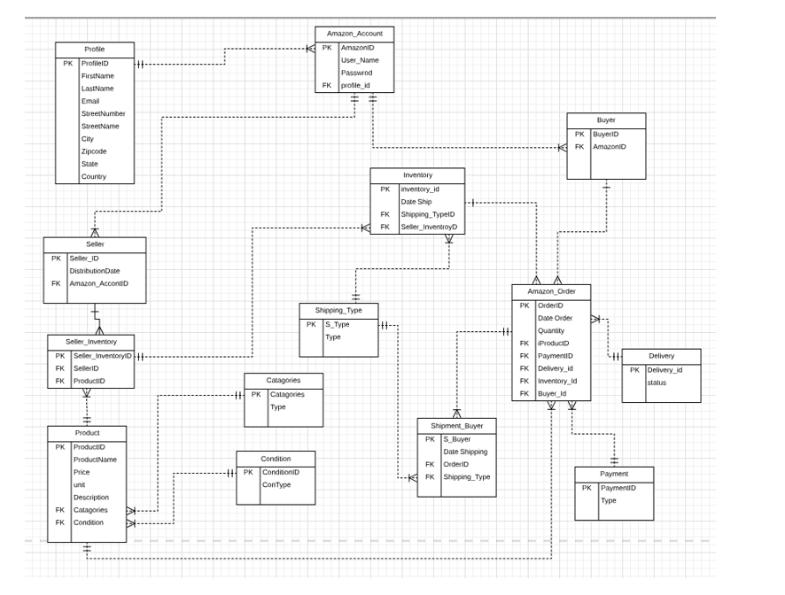
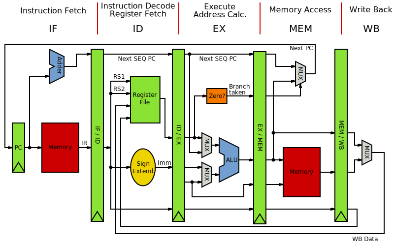
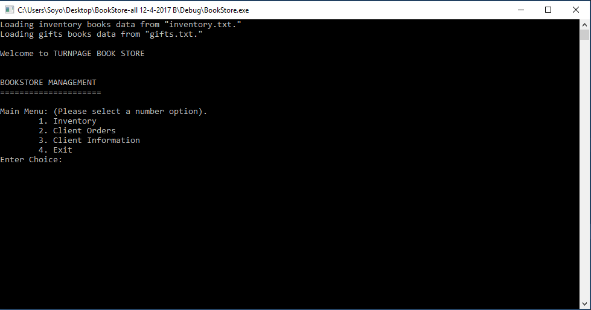

CS portfolio
Push Yourself Because, No one Else Is Going To Do It For You
Major-Related courses at Boston University
- CS 472 Computer Architecture
- CS 579 Database Management
- CS 601 Web Development
- CS 248 Distcrete Mathematic
- CS 535 Computer Networking
- CS 575 Operating Systems
- CS 673 Software Engineering
- CS 695 Enterprise Cyber Security
Major-Related courses at Quincy College
- CSI 217 Operating System
- CSI 218 Data Structures And Algorithm
- CSI 229 Visual Basic
- CSI 107 C++ Programming
- CSI 226 Unix with Linux
- CSI 244 Networking
Projects and Classworks
Fall 2018
CS 579 Database Management SQL Simulation Amazon Database
The project critieria is based on series of use cases to descript the operation of database support . There are 4 main use cases:
- New Product Use Cases
- Project Delivery Use Cases
- Product Purchase Use Cases
- Product Purchase Use Cases
For the project breakdown. I created ER diagram to show all the relationship between tables. After that, I defined DDL and insert all tuples into the tables. The main requirement is DML scenarios. I create sql query and procedure query based on case scopes.
Summer 2018
CS 472 - Computer Architecture Stimulation Pipeline Project
Pipelined datapath simulation This lab, I was written in c++ and simulate how a pipelined datapath works. It follows a function for each step in the pipeline:
IF, ID, EX, MEM, and WB with the function names from the instruction given
The main program have some initialization code and then will be one big loop, where each time through the loop is equivalent to one cycle in a pipeline. That loop will call those five functions, print out the appropriate information (the 32 registers and both READ and WRITE versions of the four pipeline registers) and then copy the WRITE version of the pipeline registers into the READ version for use the next cycle.
Fall 2017
CS 218 Data Structure And Algorithm - Book Store Management
The book store management project is purposed to practice how to use data structure list, queue and stack. We teamed up with 3 people in the class to create this project. The requirement indicated that each of us must created at least two classes and over all classes must consisted of
- Data structure list, queue and stack
- Algortihm link list and array base list
- Composition and inheritance
- Compile and readable
I created customer and customer list class by implementating algorithm link list as the customer increse constantly, Link list is a best suit for this case. We are allowed to use pre-define a link list and array base library from the professor.